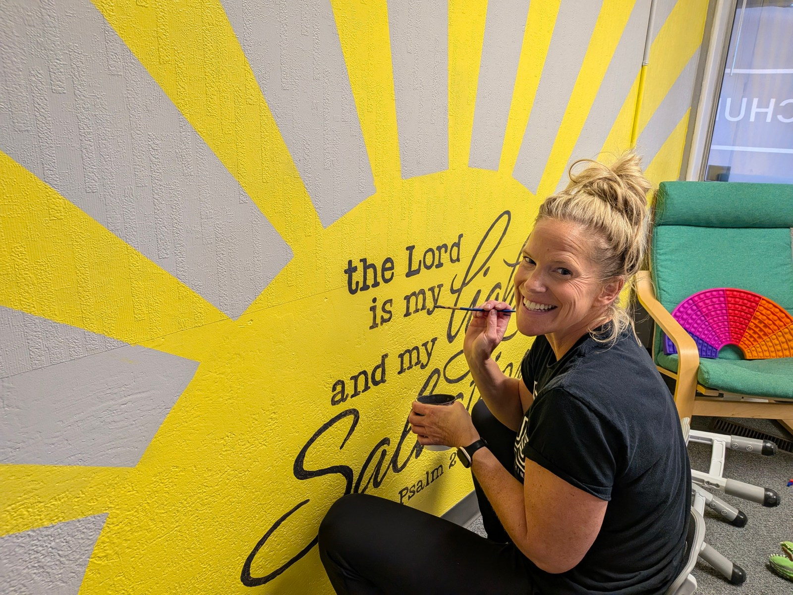
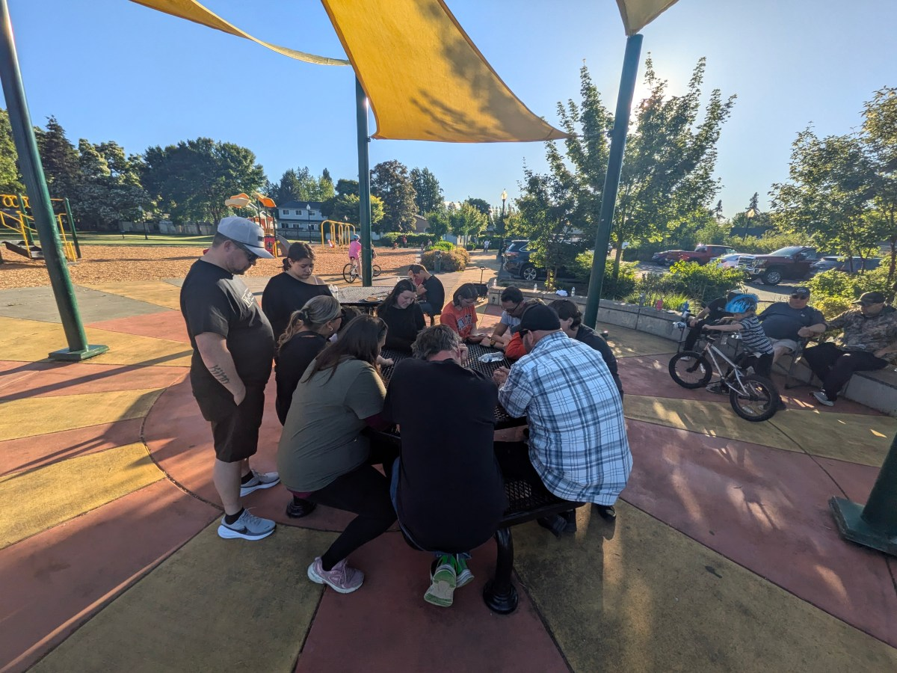
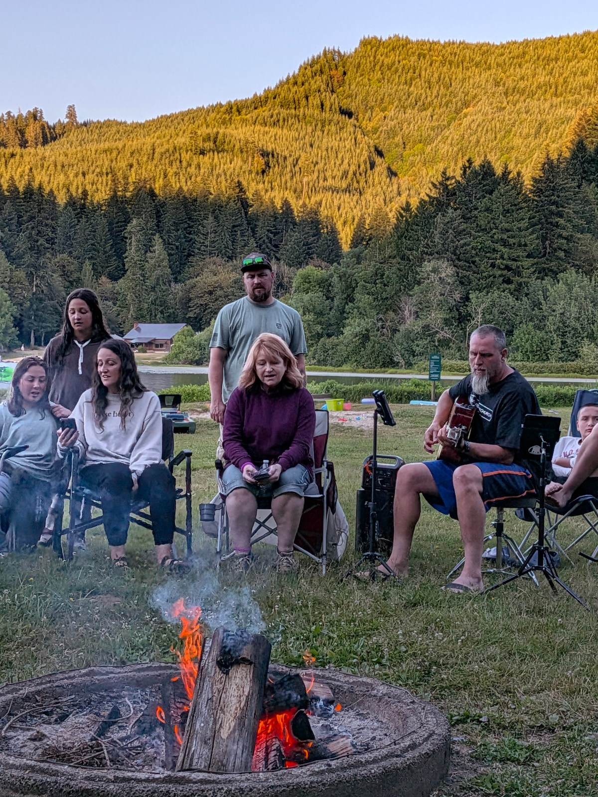

What’s happening
THERE IS A
PLACE FOR
YOU.
Find opportunities to worship, grow, serve, celebrate, and build relationships.
Life at Verbatim
LIFE HAPPENS
TOGETHER.
Some of our best moments happen around tables, outdoors, in worship, at baptisms, and while serving our community.


STAY
CONNECTED.
Keep up with registrations, groups, and church life through Church Center.
Open Church Center ↗